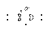

All three varieties of p46 spaceship factories can easily by constructed by using three p46 glider guns and one of the three-glider reactions (compiled in my posting on p30 spaceship factories) which synthesize a simple spaceship (LWSS, MWSS, HWSS). However, for period 46 other spaceship-producing reactions exist which use fewer than three glider streams and therefore lead to smaller factories.
Minimum-Area Lightweight Spaceship Factory of Period 46
Here, a particularly beautiful reaction where a single glider strikes the long spark of a p46 shuttle and transforms it(self) into a LWSS is truly "striking". Over time, many life enthusiasts must have discovered the reaction independently, because it is so simple. The unexpected finding of this amazing reaction probably was an exciting thrill for all its discoverers. Who first found this jewel? And when?
I believe, the following LWSS factory (constructed 31 Oct 1993) to be of minimum size. It too was probably constructed independently more than once. Is an even smaller p46 LWSS factory known?
Minimum-Area Middleweight Spaceship Factory of Period 46
There are p46 MWSS factories which are similar to the above LWSS factory in that they use only a single p46 gun shooting at a spark produced by p46 shuttles. Surprisingly, the following MWSS factory which includes two guns is smaller than all the one-gun factories I know. I constructed it 24 Apr 1996. Because of its extra gun, I don't believe that this p46 MWSS factory really is the smallest possible. Is a smaller example known?
Minimum-Area Heavyweight Spaceship Factory of Period 46
In June of 1992 I constructed my first p46 HWSS factory by using the three glider to HWSS reaction shown in my posting on p30 spaceship factories. Since then I found a number of other HWSS-producing reactions, some of which allowed me to build consecutively smaller factories. My smallest p46 HWSS factory yet (constructed 2 May 1996) is shown below. It involves a similar reaction to the one used in the minimum-area p30 HWSS factory: Two pi heptominos react with a special "spark" (actually it is not a spark because without the two pi's it would not vanish) to form the HWSS. Two details of the construction reduce the area of the factory:
- Each pi is made only by a single glider from the spark of a p46 shuttle. - A compact version of the p46 gun, which fits into a 32 x 32 square, is used. (I found that gun on 28 Apr 1996).
Possibly, this small HWSS factory could be made even smaller, if the pi heptominos could be manufactured without gliders. I searched for and found several examples where two or three p46 shuttles synthesize a pi. However, none is suited for use in the HWSS factory because in all cases, at least one of the shuttles which manufacture the pi's interferes with one of the shuttles making the "spark". Can someone manufacture suitably located pi's using p46 shuttles?
Glider-less Lightweight Spaceship Factory of Period 46
The following p46 LWSS factory is larger in size than the one shown at the top of this e-mail. However, it is special in the sense, that it is a "direct" spaceship factory, i.e. one without gliders. Since about two years I was searching for such "glider-less" spaceship factories until on 19 Apr 1996 I finally found the one shown here. It is composed of two p46 factories, where one factory periodically produces an r pentomino while the other manufactures a traffic light precursor. The two newly manufactured items immediately react to form a LWSS which flies away in time to clear the site for the next production cycle.
Are other glider-less spaceship factories known?
Dieter Leithner dietrich.leithner@dlr.de
Here is a simpler and smaller gliderless period 46 LWSS gun than the one previously shown by Dieter Leithner:
Like Dieter's original gliderless LWSS gun, this uses an interaction between an evolving R-pentomino and a traffic lights to produce the LWSS. The R-pentomino reaction is the same. But the traffic lights reaction is one I found which produces both a traffic lights and a glider. The glider would destroy the emerging LWSS and so must be removed, but there is not very much room available. Fortunately, a pair of blocks is able to do the job as shown here.
The double block reaction is also used elsewhere in the construction to shrink the total area of the gun. Perhaps this same reaction could be used in some of Dieter's other minimal area guns to shrink their area too.
I don't think that the double block reaction is new. I vaguely remember that someone mentioned a long while ago about shortening the p46 shuttle. Will the original discoverer of this reaction please stand up?
BCNU, -dbell-
Late last year I constructed a new gun. As far as I know, it is the first glider-less HWSS gun and contains the first direct (i.e. glider-less) Herschel factory.
When I started to write a note on that gun to the Life list, I realized that all major parts used in the construction were found by David Buckingham. No surprise here: without Buckingham's countless findings, this construction, as well as many others, would not have come into being. Even the idea to search for Herschel factories probably would not have occurred to me if I had not seen Buckingham's B-heptomino stages in Oct 1996. So it seemed appropriate to postpone this note for a little while and send it on a special occasion: Buckingham's birthday. Which is today.
Happy birthday David Buckingham! And thanks for the inspiration in the form of the many many Life goodies you gave to all of us.
Glider-less p176 HWSS gun, a birthday present for David Buckingham
The gun uses two copies of a glider-less Herschel factory each of
which consists of two modified copies of Buckingham's p44 oscilla-
tor (1992). Every 176 generations the colliding exhausts from two
p44 engines create a B-heptomino which is quickly guided out of the
Herschel factory's interior by Buckingham's elegant B-heptomino to
Herschel conduit, a block and a snake. Two Herschels then react to
produce two pi-heptominos, each of which is transformed into a HWSS
assisted by a galaxy and a boat, a beautiful device, found in its
original form (with a figure 8) by David Buckingham (before 1990).
Dieter Leithner, constructed 27 Dec 1996, posted 10 Feb 1997
The following persons also have contributed to this birthday present:
- Jan Kok (1971): Kok's galaxy, used in DJB's pi-to-HWSS
transformation together with a p8 figure 8
- Bob Wainwright (1980): p4 heavyweight emulator, stabilizes the
ends of DJB's p44 oscillator
- Achim Flammenkamp (1988): p4 mold, used here to modify the explosive
exhaust of DJB's p44 oscillator
- Dean Hickerson (1990): also found the p4 mold (with his Apple IIe
search program) and made it known
- Noam Elkies (1996): simplified version of the p44 oscillator
(without blocks near the HW emulators).
- Bill Gosper (1996): use of a boat instead of the figure 8 in
DJB's pi-to-HWSS transformation
My thanks to Dean Hickerson for helping me to compile the above credits.
Dieter Leithner dietrich.leithner@dlr.de
Here's something I've wanted for a while. A faulty version came up in a search, but I realize I could use the part from Buckingham's 112-step turn that eats an unwanted b-heptomino. The only other part needed is a block, which replaces two eaters in the 112-step turn.
The pi appears after 95 steps pointing down, and far enough below the lowest eater to make into an HWSS in either direction. Two gliders are also produced.
Now, using Dieter's gliderless period-176 Herschel factory, we get a smaller HWSS-gun than the one he posted for Buckingham's birthday (but it produces some gliders as a side effect; does it still count as "gliderless"?). One glider has to be eaten to avoid a self-collision with the Herschel factory, and the other is coincidentally eliminated by the back spark of one of the HWSS emulators:
--Paul
Here are some more gliderless spaceship guns, including guns for all three spaceship sizes (LWSS, MWSS, HWSS), three different engines (Dave Buckingham's p44, Bill Gosper's p46 and Noam Elkies' p50) and six periods ranging from 44 to 184.
Two days ago I tried to get an edge spark from the p44 oscillator by placing additional eaters after the unusual eater reaction used in Paul's p44 glider gun. I was not at all prepared for what happened when in one of the attempts the would-be spark suddenly flew away:
p44 gliderless MWSS gun: This gun is a close pendant to Paul Callahan's p44 glider gun. Dieter Leithner, 5 Apr 1997
An amazing reaction! The whole MWSS gun is very similar to Paul's glider gun. Only a standard eater is replaced by an eater2 and moved to a different location. (Paul, why was it not discovered by your automated search which found your p44 glider gun?) As far as I know, this p44 MWSS gun is also the smallest MWSS gun of any period, including MWSS guns which use gliders.
For a long time I considered the following incomplete pattern to be my best chance to construct a gliderless spaceship gun. In 1995, when I found that
............................OO...................... ...........................O..O.135................. ..............................O.246................. ..........................O..O...................... .............................O...................... ....................OO.....O........................ ....................O............................... .....................O.............................. .................................................... .................................................... .................OO................................. OO..............OO.OO............OOO..............OO OO...............O..O............O...O............OO .................O..O............O....O............. ..................OO..............O...O............. .................................................... ..................OO..............O...O............. .................O..O............O....O............. OO...............O..O............O...O............OO OO..............OO.OO............OOO..............OO .................OO................................. .................................................... .................................................... .................................................... .................................................... ...........................OO....................... ...........................OO.......................produces a LWSS from any one of six different sparks with one, two or three bits (indicated above by 1, 2, 13, 24, 136 and 245), the completion of the construction seemed straightforward.
[The following shows the effect of spark "1": . (PBC)]
But such is Life: I did not search for the p44 MWSS gun and stumbled over it. On the other hand I had to search a long time to find a suitable p46 sparker to complete the supposedly easy p46 LWSS gun. The new p46 gun is larger than David Bell's minimum area specimen (see David's posting of 14 Oct 1996) and also larger than my first gliderless LWSS gun (see my posting of 6 Aug 1996). Maybe, someone knows a smaller p46 sparker.
p46 gliderless LWSS gun #3: Dieter Leithner, completed 2 Feb 1997
p46 gliderless MWSS gun: The gun is based on David Bell's p46 gliderless LWSS gun and a p46 gliderless LWSS-MWSS converter. Dieter Leithner, 4 Feb 1997
p46 gliderless HWSS gun: The gun is based on the above p46 gliderless MWSS gun and a p46 gliderless MWSS-HWSS converter. Dieter Leithner, 6 Feb 1997
The reaction which produces a gliderless MWSS from the p44 also works with the p50:
Pseudo p50 gliderless MWSS gun: The gun uses a modification of Dean Hickerson's p50 glider gun, stabilized by p30 sparkers. Dieter Leithner, 6 Apr 1997
It is well known that certain periods of LWSS guns can be doubled and quadrupled in a simple way by filtering the LWSS stream with emulators and blockers. The following p92 LWSS gun and the p184 LWSS gun shown later illustrate that technique:
p92 gliderless LWSS gun: The gun uses David Bell's p46 gliderless LWSS gun and Bob Wainwright's p4 MW emulator as a filter to delete every other LWSS. Oct 1996
Filters and spaceship type converters can also be combined as the following two examples show:
p92 gliderless MWSS gun: The gun is based on the above p92 gliderless LWSS gun and a p46 LWSS-MWSS converter. Dieter Leithner, 4 Feb 1997
p92 gliderless HWSS gun: The gun is based on the above p92 gliderless MWSS gun and a p46 MWSS-HWSS converter. Dieter Leithner, 11 Feb 1997
The following p176 LWSS gun is based on a reaction of a b-heptomino with a beehive which is assisted by a block:
p176 gliderless LWSS gun: Dieter Leithner, 28 Jan 1997
By applying some hammering on the LWSS output stream of the above LWSS gun a MWSS gun can be constructed but the result is rather baroque:
p176 gliderless MWSS gun: The gun is based on the above p176 gliderless LWSS gun and a p176 gliderless LWSS-MWSS converter. The converter always needs an input LWSS. Dieter Leithner, 4 Feb 1997
The p176 gliderless HWSS gun given below is larger than the elegant one which Paul posted on 25 Feb 1997 as an application of his beautiful Herschel to pi conduit. The new p176 gun uses a Herschel/r- pentomino reaction yielding a pi-heptomino which is then converted to a HWSS.
p176 gliderless HWSS gun: Dieter Leithner, 22 Jan 1997
The following three p184 spaceship guns are included here for the sake of completeness. They combine David's p46 gliderless LWSS gun with filters and spaceship type converters in a similar way as the three p92 spaceship guns shown in part 1 of this posting.
p184 gliderless LWSS gun: The gun uses David Bell's p46 gliderless LWSS gun, Bob Wainwright's p4 MW emulator and the p8 blocker as a filters to delete 3 out of 4 LWSS. C #Oct 1996
p184 gliderless MWSS gun: The gun is based on the above p184 gliderless LWSS gun and a p46 gliderless LWSS-MWSS converter. Dieter Leithner, 4 Feb 1997
p184 gliderless HWSS gun: The gun is based on the above p184 gliderless MWSS gun and a p46 gliderless MWSS-HWSS converter. Dieter Leithner, 11 Feb 1997
Dieter dietrich.leithner@dlr.de
Mostly to Dieter Leithner
The p44 MWSS gun is beautiful!
You said:
It is well known that certain periods of LWSS guns can be doubled and quadrupled in a simple way by filtering the LWSS stream with emulators and blockers.Less well known is the fact that MWSS and HWSS guns can also be doubled, using other p4 sparkers. For example, your p50 MWSS gun becomes:
Pseudo p100 gliderless MWSS gun:
Here's how to double a HWSS period:
p4 deletes half of a (short) p30 HWSS stream:
Dean Hickerson dean@ucdmath.ucdavis.edu